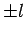
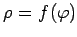
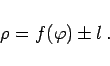

Die Konchoide des NIKOMEDES ist ein Spezialfall der allgemeinen Konchoide. Die Konchoide zu einer gegebenen Kurve ergibt sich, wenn man den Radiusvektor zu jedem Punkt der gegebenen Kurve um eine konstante Strecke  verlängert. Wenn die Gleichung der Kurve in Polarkoordinaten  lautet, dann ist die Gleichung ihrer Konchoide
|  | (2.223) |
Die Konchoide des NIKOMEDES ist dann die Konchoide der Geraden.